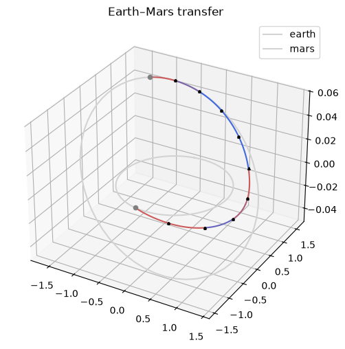
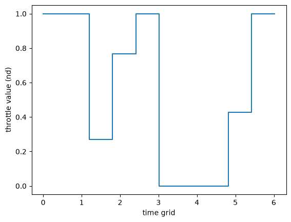
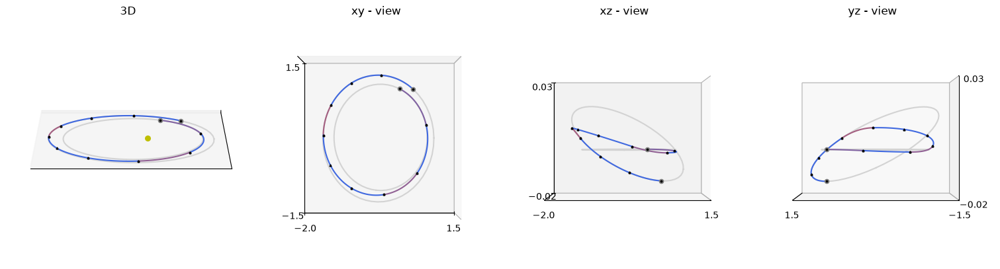
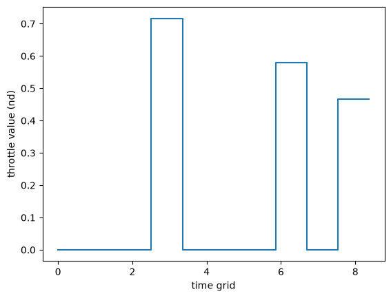
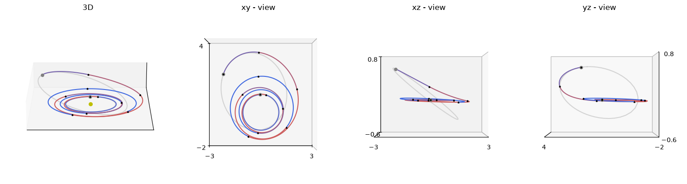
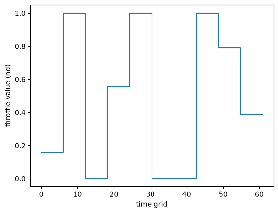
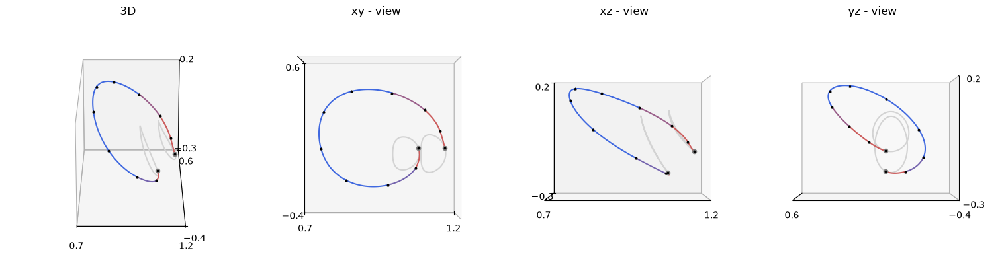
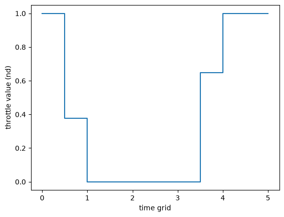
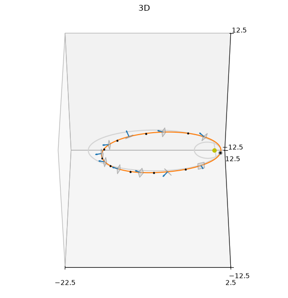

Zero-Order Hold II#
This tutorial uses the TOPS moving-boundary wrappers in pykep.trajopt.gym and a custom Earth–Mars instance of pykep.trajopt.zoh_pl2pl, with single or multiple shooting. Set use_ms in the setup cell to choose the transcription. Multiple shooting adds interior states, initialized from the current controls and time grid. In all cases the boundary states are retrieved from ephemerides at the optimized departure epoch.
Decision variables and time grid#
For low-thrust planet-to-planet problems, boundary variables precede the per-segment throttle and unit direction:
Here \(t_0\) is the departure epoch (MJD2000), \(m_f\) the final mass, \((v_\infty, \mathbf{i})\) the boundary excess speeds and directions, \(T_k\) and \(\mathbf{i}_k\) the segment throttle and direction, and \(w_k\) optional softmax weights. Multiple shooting appends the interior node states. Solar-sail problems instead use cone and clock angles \((\alpha_k,\beta_k)\) per segment and have no mass variable.
With uniform encoding, segment durations are equal. With softmax encoding,
All examples share this setup. Set use_ms=True to use multiple-shooting and thus add interior states to the decision variables; the notebook initializes them before gradient checks and optimization.
Import the required packages.
# Core numerics, optimization, and plotting imports used throughout the tutorial
import pykep as pk
import heyoka as hy
import numpy as np
import pygmo as pg
import pygmo_plugins_nonfree as ppnf
from matplotlib import pyplot as plt
Configure the nonlinear optimizer.
We use SNOPT, keeping an IPOPT configuration with strict tolerances as an alternative, so the gradient checks and feasibility status are meaningful when comparing benchmark instances.
# Set True to use multiple shooting in all examples
use_ms = True
ipopt = pg.ipopt()
ipopt.set_integer_options({"max_iter": 2000})
ipopt.set_numeric_options({"tol": 1e-10})
ipopt.set_string_options({"sb": "yes"})
algo = pg.algorithm(ipopt)
# If you want to use SNOPT instead of IPOPT, uncomment the following lines and set the correct path to the SNOPT library.
#path_to_snopt72 = "..."
#snopt = ppnf.snopt7(library=path_to_snopt72, minor_version=2, screen_output=False)
#snopt.set_integer_option("Major iterations limit", 2000)
#snopt.set_integer_option("Iterations limit", 20000)
#snopt.set_numeric_option("Major optimality tolerance", 1e-3)
#snopt.set_numeric_option("Major feasibility tolerance", 1e-12)
algo = pg.algorithm(ipopt)
def make_initial_population(prob, udp, use_ms=use_ms):
pop = pg.population(prob, 1)
if use_ms:
pop.set_x(0, udp.guess_internal_states(pop.champion_x))
return pop
def gradient_error(prob, udp, x):
numerical = pg.estimate_gradient_h(prob.fitness, x, dx=1e-8)
if use_ms:
pattern = prob.gradient_sparsity()
analytical = np.zeros((prob.get_nf(), prob.get_nx()))
analytical[pattern[:, 0], pattern[:, 1]] = udp.gradient(x)
analytical = analytical.ravel()
else:
analytical = udp.gradient(x)
return numerical - analytical
An Earth–Mars transfer#
A custom planet-to-planet transfer built directly on pykep.trajopt.zoh_pl2pl with JPL low-precision ephemerides. The Taylor-adaptive integrators require the central-body gravitational parameter to be 1, so all quantities are non-dimensionalized with \(L = 1\,\text{AU}\) and \(\mu_\odot\).
# Problem data (SI units)
mu = pk.MU_SUN
max_thrust = 0.4 # (N)
isp = 3000 # (s)
veff = isp * pk.G0 # (m/s)
# Initial mass
ms = 1500.0 # (kg)
# tof bounds (in days)
tof_bounds = [100.0, 350.0]
# Number of segments
nseg = 10
# Source and destination planets (return m, m/s as a function of an epoch (days))
earth = pk.planet(pk.udpla.jpl_lp(body="EARTH"))
mars = pk.planet(pk.udpla.jpl_lp(body="MARS"))
# Lower tolerances result in higher speed (the needed tolerance depends on the orbital regime)
tol = 1e-10
tol_var = 1e-6
# We instantiate ZOH Taylor integrators for Keplerian dynamics.
ta = pk.ta.get_zoh_kep(tol)
ta_var = pk.ta.get_zoh_kep_var(tol_var)
# Units that will be used in the ZOH Taylor integrator.
L = pk.AU # eph will return SI units, we divide by this number.
MU = mu # (central body mu must be 1 as a requirement of pk.ta.get_zoh_kep)
TIME = np.sqrt(L**3 / MU)
V = np.sqrt(MU / L)
ACC = V**2 / L
MASS = ms
F = MASS * ACC
# Non dimensional quantities.
ms_nd = ms / MASS
veff_nd = veff / V
tof_bounds_nd = [it * pk.DAY2SEC / TIME for it in tof_bounds]
max_thrust_nd = max_thrust / F
# The UDP requires a nominal integrator (fitness) and a variational one (gradients)
ta.pars[4] = 1.0 / veff_nd
ta_var.pars[4] = 1.0 / veff_nd
print(f"Nominal integrator state dimension: {len(ta.state)}")
print(f"Variational integrator state dimension: {len(ta_var.state)}")
Nominal integrator state dimension: 7
Variational integrator state dimension: 84
# Select the transcription from use_ms and build the wrapped UDP
udp_type = pk.trajopt.zoh_ms_pl2pl if use_ms else pk.trajopt.zoh_pl2pl
udp = udp_type(
pls=earth,
plf=mars,
ms=ms_nd,
nseg=nseg,
cut=0.5,
t0_bounds=[7360, 8300.0], # (MJD2000)
tof_bounds=tof_bounds_nd,
mf_bounds=[2 / 3, 1.0],
vinf_dep_bounds=[0.0, 0.033574293988433881], # (1.0 km/s in non dimensional units)
vinf_arr_bounds=[0.0, 0.0], # a rendezvous
tas=(ta, ta_var),
max_thrust=max_thrust_nd,
time_encoding="uniform",
inequalities_for_tc=True,
L=L,
V=V,
)
prob = pg.problem(udp)
prob.c_tol = 1e-6
Check analytical gradients against finite differences. gradient_error handles dense SS gradients and sparse MS gradients.
pop = make_initial_population(prob, udp)
grad_err = gradient_error(prob, udp, pop.champion_x)
grad_err.max(), grad_err.min()
(1.8124891543958022e-05, -8.2730148302512241e-06)
# Solve and report a compact set of diagnostics
pop = algo.evolve(pop)
print(prob.feasibility_f(pop.champion_f))
print("Objective:", pop.champion_f[0])
print("Final mass:", pop.champion_x[1] * MASS)
print("Final tof:", pop.champion_x[10 + 4 * udp.nseg] * udp.TIME / pk.DAY2SEC)
True
Objective: -0.850254746683
Final mass: 1275.38212002
Final tof: 350.000003271
# Plot the transfer together with the boundary planet orbits
fig = plt.figure(figsize=(6, 6))
ax = fig.add_subplot(111, projection="3d")
t0 = udp.compute_t0(pop.champion_x)
ax = pk.plot.add_planet_orbit(ax=ax, pla=earth, label="earth", units=L, color="lightgray")
ax = pk.plot.add_planet_orbit(ax=ax, pla=mars, label="mars", units=L, color="lightgray")
ax = udp.plot(pop.champion_x, ax=ax, N=20, c="k", s=5)
ax = pk.plot.add_planet(ax=ax, when=t0, pla=earth, units=L, color="gray", s=20)
ax = pk.plot.add_planet(
ax=ax,
when=t0 + pop.champion_x[10 + 4 * udp.nseg] * udp.TIME / pk.DAY2SEC,
pla=mars,
units=L,
color="gray",
s=20,
)
ax.set_title("Earth–Mars transfer")
ax.legend()
<matplotlib.legend.Legend at 0x3564a57f0>

udp.plot_throttle(pop.champion_x)
<Axes: xlabel='time grid', ylabel='throttle value (nd)'>

Two-body dynamics (Cartesian)#
A TOPS two-body transfer with a free departure epoch (moving boundaries), using Cartesian states.
# Load a TOPS moving-boundary case and build the wrapped UDP
prob_name = "P0"
udp = pk.trajopt.gym.tops_twobody_mb(
prob_name, nseg=10, time_encoding="uniform", ms=use_ms
)
print(udp.extra_info)
prob = pg.problem(udp)
prob.c_tol = 1e-7
Mildly-elliptic to mildly-elliptic transfer (e_s~0.201, e_f~0.210) in fixed tof -> T=0.22N, Isp=3000s
pop = make_initial_population(prob, udp, use_ms)
grad_err = gradient_error(prob, udp, pop.champion_x)
grad_err.max(), grad_err.min()
(3.4468338183657465e-08, -3.4667058557147357e-08)
# Solve and summarize
pop = algo.evolve(pop)
print(prob.feasibility_f(pop.champion_f))
print("Objective:", pop.champion_f[0])
print("Final mass:", pop.champion_x[1])
print("Final tof:", pop.champion_x[10 + 4 * udp.nseg])
True
Objective: -0.926992598962
Final mass: 0.926992598962
Final tof: 8.36754771145
axes = udp.plot(pop.champion_x, N=100, mark_segments=True, s=3, c="k")

udp.plot_throttle(pop.champion_x)
<Axes: xlabel='time grid', ylabel='throttle value (nd)'>

Two-body dynamics (Modified Equinoctial Elements)#
The same TOPS transfer represented with modified equinoctial states.
# Load a TOPS MEE moving-boundary case and build the wrapped UDP
prob_name = "P0"
udp = pk.trajopt.gym.tops_mee_mb(
prob_name, nseg=10, time_encoding="uniform", ms=use_ms
)
print(udp.extra_info)
prob = pg.problem(udp)
prob.c_tol = 1e-7
Dionysus problem (doi: 10.2514/1.G000379) - Fixed time
pop = make_initial_population(prob, udp)
grad_err = gradient_error(prob, udp, pop.champion_x)
grad_err.max(), grad_err.min()
(1.2485315683541387e-06, -8.1925646533420604e-07)
# Solve and summarize
pop = algo.evolve(pop)
print(prob.feasibility_f(pop.champion_f))
print("Objective:", pop.champion_f[0])
print("Final mass:", pop.champion_x[1])
print("Final tof:", pop.champion_x[10 + 4 * udp.nseg])
True
Objective: -0.593691946402
Final mass: 0.593691946402
Final tof: 60.8188055151
axes = udp.plot(pop.champion_x, N=100, mark_segments=True, s=3, c="k")

udp.plot_throttle(pop.champion_x)
<Axes: xlabel='time grid', ylabel='throttle value (nd)'>

Circular Restricted Three-Body Problem#
A TOPS CR3BP case with a free departure epoch; model parameters are configured by the gym wrapper.
# Load a TOPS CR3BP moving-boundary case and build the wrapped UDP
prob_name = "P0"
udp = pk.trajopt.gym.tops_cr3bp_mb(
prob_name, nseg=10, time_encoding="uniform", inequalities_for_tc=True, ms=use_ms
)
print(udp.extra_info)
prob = pg.problem(udp)
prob.c_tol = 1e-7
Halo 2 Halo in fixed tof
pop = make_initial_population(prob, udp)
grad_err = gradient_error(prob, udp, pop.champion_x)
grad_err.max(), grad_err.min()
(2.080500225432047e-07, -2.7937873525729628e-07)
# Solve and summarize
pop = algo.evolve(pop)
print(prob.feasibility_f(pop.champion_f))
print("Objective:", pop.champion_f[0])
print("Final mass:", pop.champion_x[1])
print("Final tof:", pop.champion_x[10 + 4 * udp.nseg])
True
Objective: -0.947600394282
Final mass: 0.947600394282
Final tof: 5.0
axes = udp.plot(pop.champion_x, N=100, mark_segments=True, s=3, c="k")

udp.plot_throttle(pop.champion_x)
<Axes: xlabel='time grid', ylabel='throttle value (nd)'>

Solar-sail dynamics#
The solar-sail wrapper uses the same use_ms setting. Its controls are the cone and clock angles; it has no mass or throttle variables.
prob_name = "P1"
udp = pk.trajopt.gym.tops_ss_mb(
prob_name, nseg=10, time_encoding="softmax", inequalities_for_tc=True, ms=use_ms
)
print(udp.extra_info)
prob = pg.problem(udp)
prob.c_tol = 1e-6
tof_index = 9 + 2 * udp.nseg
Eccentric (e=0.5, a=2) to highly-eccentric (e=0.9, a=10) orbit at periapsis (rp=1, nd)
pop = make_initial_population(prob, udp)
grad_err = gradient_error(prob, udp, pop.champion_x)
grad_err.max(), grad_err.min()
(1.0576291089137158e-05, -8.9922771238093446e-06)
# Solve and summarize
pop = algo.evolve(pop)
print("Feasible:", prob.feasibility_f(pop.champion_f))
print("Objective:", pop.champion_f[0])
print("Final tof:", pop.champion_x[tof_index] * udp.TIME)
Feasible: True
Objective: 180.0
Final tof: 904075720.367
ax = udp.plot(pop.champion_x, N=100, mark_segments=True, s=3, c="k", sail_size=0.5)
